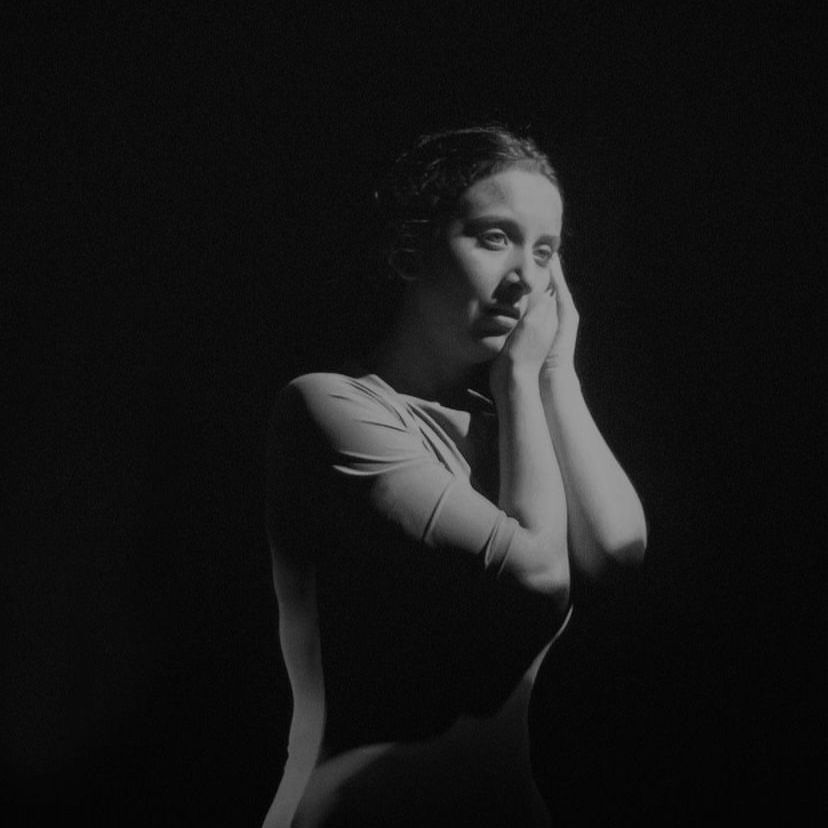
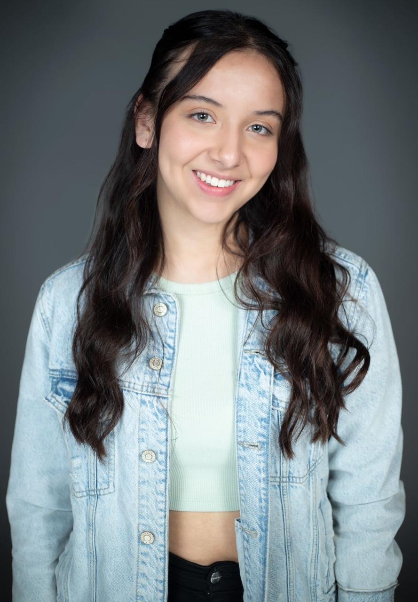

Catalina Rodriguez
Acerca de mi
ESTATURA 1,70 TALLAS Camisa S - M Zapatos 38
Habilidades e idioma
Piano - Canto - Español - Ingles


Estudios
2022
- Taller Suzuki y viewpoints - Ernesto Martínez
2022
- La acción dramática Caracol tv- Pawel Nowicki
2022
- Lenguaje actoral Caracol tv - Annia Nowicka
2022
- Trabajo para y detrás de cámaras Caracol tv- Germán Giraldo
2022
- Actuación para televisión Caracol tv - Saín Castro
2022
- Combate escénico Caracol tv - Eduard Salas
2022
- Producción Caracol tv - Silvia Naranjo
2022
- Lenguaje Audiovisual Caracol tv - Carlos Ortiz
2023
- Taller Laban teatro la maldita vanidad - Tina Mitchell
2024
- Taller/ laboratorio entrenamiento actoral - David Moncada -
Felipe Ortiz
Experiencia laboral
2022
- DISTORSIONN - Cortometraje
2022
- Lo que está quieto se deja quieto - Cortometraje
2022
- Herencia - Cortometraje
2022
- Un Bonito detalle -Cortometraje
2022
- Un sueño maravilloso - Cortometraje
2023
- Actores y demonios - Serie Web
2023
- El club de los que no pueden dormir - Cortometraje
2023
- Contra el espejo - Cortometraje
2023
- Teaser cuatro años de soledad RTVC
2024
- Hasta que la noche termine - Cortometraje
2024
- El que tenga tik tok toma dos - Cortometraje
2024
- Rojo Carmesí RCN